Java Programs Collection
1. Passing Parameters to an Applet
import java.applet.Applet;
import java.awt.*;
/* <applet code="ParameterApplet" width=300 height=200>
<param name="message" value="Hello, Java Applet!">
</applet> */
public class ParameterApplet extends Applet {
String message;
public void init() {
message = getParameter("message");
if (message == null)
message = "No Parameter Passed!";
}
public void paint(Graphics g) {
g.drawString(message, 50, 100);
}
}
Expected Output:
An applet window displaying the message "Hello, Java Applet!" centered in the window.

Note: To run this applet, you need to embed it in an HTML file with the <applet> tag
as shown in the comment.
2. MouseListener
import java.awt.*;
import java.awt.event.*;
import javax.swing.*;
public class MouseListenerExample extends JFrame implements MouseListener {
JLabel label;
MouseListenerExample() {
label = new JLabel("Click anywhere!");
add(label);
addMouseListener(this);
setSize(300, 200);
setLayout(new FlowLayout());
setDefaultCloseOperation(JFrame.EXIT_ON_CLOSE);
setVisible(true);
}
public void mouseClicked(MouseEvent e) {
label.setText("Mouse Clicked at X: " + e.getX() + " Y: " + e.getY());
}
public void mousePressed(MouseEvent e) {}
public void mouseReleased(MouseEvent e) {}
public void mouseEntered(MouseEvent e) {}
public void mouseExited(MouseEvent e) {}
public static void main(String[] args) {
new MouseListenerExample();
}
}
Expected Output:
A window with a label that says "Click anywhere!". When you click in the window, the label updates to
show the X and Y coordinates of your click.
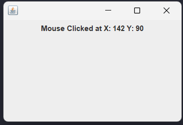
3. ItemListener
import java.awt.*;
import java.awt.event.*;
import javax.swing.*;
public class ItemListenerExample extends JFrame implements ItemListener {
private JComboBox comboBox;
private JLabel label;
public ItemListenerExample() {
// Set up the frame
setTitle("Item Listener Example");
setSize(400, 200);
setDefaultCloseOperation(JFrame.EXIT_ON_CLOSE);
setLayout(new FlowLayout());
// Create a combo box with options
String[] items = {"Apple", "Banana", "Cherry"};
comboBox = new JComboBox<>(items);
comboBox.addItemListener(this);
// Label to display the selected item
label = new JLabel("Select an item");
// Add components to the frame
add(comboBox);
add(label);
}
@Override
public void itemStateChanged(ItemEvent e) {
if (e.getStateChange() == ItemEvent.SELECTED) {
label.setText("Selected: " + e.getItem());
}
}
public static void main(String[] args) {
SwingUtilities.invokeLater(() -> {
new ItemListenerExample().setVisible(true);
});
}
}
Expected Output:
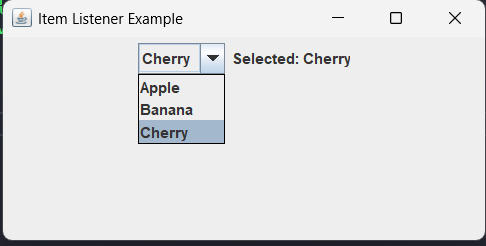
4. FocusListener
import java.awt.*;
import java.awt.event.*;
public class FocusListenerExample extends Frame implements FocusListener {
TextField textField;
FocusListenerExample() {
textField = new TextField(20);
textField.addFocusListener(this);
add(textField);
setSize(300, 200);
setLayout(new FlowLayout());
setVisible(true);
}
public void focusGained(FocusEvent e) {
textField.setBackground(Color.YELLOW);
}
public void focusLost(FocusEvent e) {
textField.setBackground(Color.WHITE);
}
public static void main(String[] args) {
new FocusListenerExample();
}
}
Expected Output:
A window with a text field. When you click in the text field (gaining focus), its background turns
yellow. When you click outside (losing focus), it returns to white.
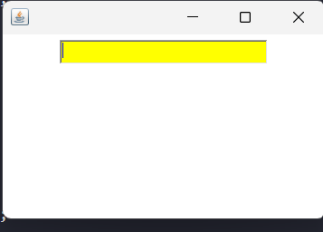
5. ActionListener
import java.awt.*;
import java.awt.event.*;
public class ActionListenerExample extends Frame implements ActionListener {
Button button;
ActionListenerExample() {
button = new Button("Click Me");
button.addActionListener(this);
add(button);
setSize(300, 200);
setLayout(new FlowLayout());
setVisible(true);
}
public void actionPerformed(ActionEvent e) {
System.out.println("Button Clicked!");
}
public static void main(String[] args) {
new ActionListenerExample();
}
}
Expected Output:
A window with a button labeled "Click Me". When clicked, the console will display "Button Clicked!".
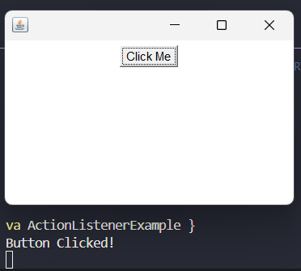
Console output when button clicked:
Button Clicked!
6. WindowListener
import java.awt.*;
import java.awt.event.*;
public class WindowListenerExample extends Frame implements WindowListener {
WindowListenerExample() {
addWindowListener(this);
setSize(300, 200);
setLayout(null);
setVisible(true);
}
public void windowClosing(WindowEvent e) {
System.out.println("Window Closing");
dispose();
}
public void windowOpened(WindowEvent e) {}
public void windowClosed(WindowEvent e) {}
public void windowIconified(WindowEvent e) {}
public void windowDeiconified(WindowEvent e) {}
public void windowActivated(WindowEvent e) {}
public void windowDeactivated(WindowEvent e) {}
public static void main(String[] args) {
new WindowListenerExample();
}
}
Expected Output:
A blank window. When you try to close it, the console will display "Window Closing" before the window
closes.

Console output when closing window:
Window Closing
7. FlowLayout
import java.awt.*;
import javax.swing.*;
public class FlowLayoutExample {
public static void main(String[] args) {
JFrame frame = new JFrame("FlowLayout Example");
frame.setLayout(new FlowLayout());
frame.add(new Button("Button 1"));
frame.add(new Button("Button 2"));
frame.add(new Button("Button 3"));
frame.setSize(300, 200);
frame.setVisible(true);
}
}
Expected Output:
A window with three buttons arranged in a row (left to right) in the center. If the window is too narrow,
the buttons will wrap to the next line.
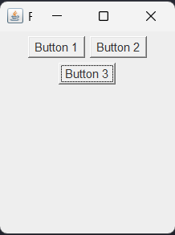
8. BorderLayout
import java.awt.*;
import javax.swing.*;
public class BorderLayoutExample {
public static void main(String[] args) {
JFrame frame = new JFrame("BorderLayout Example");
frame.setLayout(new BorderLayout());
frame.add(new Button("North"), BorderLayout.NORTH);
frame.add(new Button("South"), BorderLayout.SOUTH);
frame.add(new Button("East"), BorderLayout.EAST);
frame.add(new Button("West"), BorderLayout.WEST);
frame.add(new Button("Center"), BorderLayout.CENTER);
frame.setSize(300, 200);
frame.setVisible(true);
}
}
Expected Output:
A window with buttons arranged in five regions: North (top), South (bottom), East (right), West (left),
and Center (remaining space).
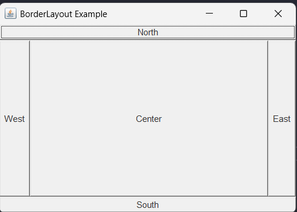
9. GridLayout
import java.awt.*;
import javax.swing.*;
public class GridLayoutExample {
public static void main(String[] args) {
JFrame frame = new JFrame("GridLayout Example");
frame.setLayout(new GridLayout(2, 2));
frame.add(new Button("1"));
frame.add(new Button("2"));
frame.add(new Button("3"));
frame.add(new Button("4"));
frame.setSize(300, 200);
frame.setVisible(true);
}
}
Expected Output:
A window with four buttons arranged in a 2x2 grid of equal-sized cells.
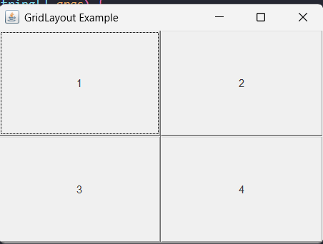
10. CardLayout
import java.awt.*;
import java.awt.event.*;
import javax.swing.*;
public class CardLayoutExample {
CardLayout card;
JPanel panel;
CardLayoutExample() {
JFrame frame = new JFrame("CardLayout Example");
card = new CardLayout();
panel = new JPanel(card);
Button b1 = new Button("Card 1");
Button b2 = new Button("Card 2");
panel.add(b1, "1");
panel.add(b2, "2");
frame.add(panel);
frame.setSize(300, 200);
frame.setVisible(true);
b1.addActionListener(e -> card.next(panel));
b2.addActionListener(e -> card.next(panel));
}
public static void main(String[] args) {
new CardLayoutExample();
}
}
Expected Output:
A window initially showing "Card 1" button. When clicked, it flips to show "Card 2" button. Clicking
again returns to "Card 1".
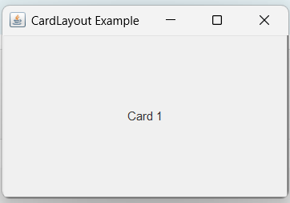
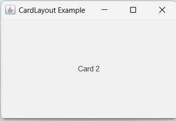
11. Adapter Class
import java.awt.*;
import java.awt.event.*;
public class AdapterExample extends Frame {
AdapterExample() {
addWindowListener(new WindowAdapter() {
public void windowClosing(WindowEvent e) {
System.out.println("Window Closing");
dispose();
}
});
setSize(300, 200);
setLayout(null);
setVisible(true);
}
public static void main(String[] args) {
new AdapterExample();
}
}
Expected Output:
A blank window. When closed, the console displays "Window Closing" before the window closes.

Console output when closing window:
Window Closing
Note: The Adapter class provides empty implementations of all methods in the WindowListener
interface, allowing us to override only the methods we need.
12. AWT Menu
import java.awt.*;
import java.awt.event.*;
public class AWTMenuExample extends Frame {
AWTMenuExample() {
MenuBar menuBar = new MenuBar();
Menu file = new Menu("File");
MenuItem open = new MenuItem("Open");
MenuItem exit = new MenuItem("Exit");
file.add(open);
file.add(exit);
menuBar.add(file);
setMenuBar(menuBar);
exit.addActionListener(e -> System.exit(0));
setSize(300, 200);
setVisible(true);
}
public static void main(String[] args) {
new AWTMenuExample();
}
}
Expected Output:
A window with a menu bar containing a "File" menu. The File menu has "Open" and "Exit" options. Clicking
"Exit" closes the application.
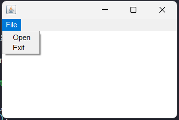
13. WAP in Java to demonstrate swing's JTable
import javax.swing.*;
import java.awt.*;
public class JTableExample extends JFrame {
public JTableExample() {
// Set up the frame
setTitle("JTable Example");
setSize(500, 300);
setDefaultCloseOperation(JFrame.EXIT_ON_CLOSE);
setLayout(new BorderLayout());
// Data for the table
String[][] data = {
{"1", "Alice", "23"},
{"2", "Bob", "25"},
{"3", "Charlie", "22"}
};
// Column names
String[] columnNames = {"ID", "Name", "Age"};
// Create JTable
JTable table = new JTable(data, columnNames);
// Add table to a scroll pane
JScrollPane scrollPane = new JScrollPane(table);
add(scrollPane, BorderLayout.CENTER);
}
public static void main(String[] args) {
SwingUtilities.invokeLater(() -> {
new JTableExample().setVisible(true);
});
}
}
Expected Output:
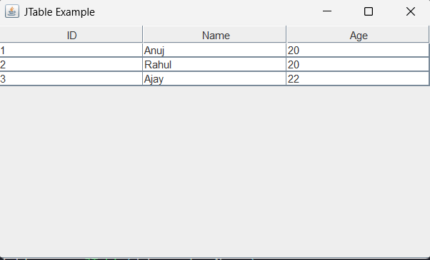
14. WAP in Java to demonstrate swing's JTabbedPane
import javax.swing.*;
import java.awt.*;
public class JTabbedPaneExample extends JFrame {
public JTabbedPaneExample() {
// Set up the frame
setTitle("JTabbedPane Example");
setSize(400, 300);
setDefaultCloseOperation(JFrame.EXIT_ON_CLOSE);
setLayout(new BorderLayout());
// Create a tabbed pane
JTabbedPane tabbedPane = new JTabbedPane();
// Create panels for tabs
JPanel panel1 = new JPanel();
panel1.add(new JLabel("This is Tab 1"));
JPanel panel2 = new JPanel();
panel2.add(new JLabel("This is Tab 2"));
JPanel panel3 = new JPanel();
panel3.add(new JLabel("This is Tab 3"));
// Add tabs to tabbed pane
tabbedPane.addTab("Tab 1", panel1);
tabbedPane.addTab("Tab 2", panel2);
tabbedPane.addTab("Tab 3", panel3);
// Add tabbed pane to frame
add(tabbedPane, BorderLayout.CENTER);
}
public static void main(String[] args) {
SwingUtilities.invokeLater(() -> {
new JTabbedPaneExample().setVisible(true);
});
}
}
Expected Output:
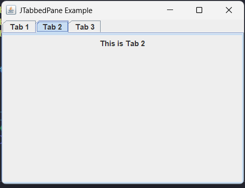
15. WAP in Java to demonstrate swing's JMenuitem
import javax.swing.*;
import java.awt.*;
import java.awt.event.ActionEvent;
import java.awt.event.ActionListener;
public class JMenuItemExample extends JFrame {
public JMenuItemExample() {
// Set up the frame
setTitle("JMenuItem Example");
setSize(400, 300);
setDefaultCloseOperation(JFrame.EXIT_ON_CLOSE);
setLayout(new BorderLayout());
// Create menu bar
JMenuBar menuBar = new JMenuBar();
JMenu fileMenu = new JMenu("File");
JMenu editMenu = new JMenu("Edit");
// Create menu items
JMenuItem openItem = new JMenuItem("Open");
JMenuItem saveItem = new JMenuItem("Save");
JMenuItem exitItem = new JMenuItem("Exit");
// Add action listener to exit menu item
exitItem.addActionListener(new ActionListener() {
@Override
public void actionPerformed(ActionEvent e) {
System.exit(0);
}
});
// Add menu items to menus
fileMenu.add(openItem);
fileMenu.add(saveItem);
fileMenu.add(exitItem);
// Add menus to menu bar
menuBar.add(fileMenu);
menuBar.add(editMenu);
// Set menu bar to frame
setJMenuBar(menuBar);
}
public static void main(String[] args) {
SwingUtilities.invokeLater(() -> {
new JMenuItemExample().setVisible(true);
});
}
}
Expected Output:
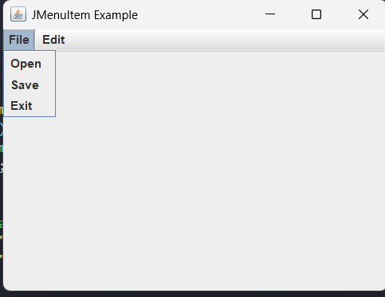
16. WAP in Java to demonstrate swing's JPopupMenu
import javax.swing.*;
import java.awt.*;
import java.awt.event.*;
public class JPopupMenuExample extends JFrame {
public JPopupMenuExample() {
// Set up the frame
setTitle("JPopupMenu Example");
setSize(400, 300);
setDefaultCloseOperation(JFrame.EXIT_ON_CLOSE);
setLayout(new BorderLayout());
// Create popup menu
JPopupMenu popupMenu = new JPopupMenu();
JMenuItem cutItem = new JMenuItem("Cut");
JMenuItem copyItem = new JMenuItem("Copy");
JMenuItem pasteItem = new JMenuItem("Paste");
// Add menu items to popup menu
popupMenu.add(cutItem);
popupMenu.add(copyItem);
popupMenu.add(pasteItem);
// Add mouse listener to show popup menu
addMouseListener(new MouseAdapter() {
@Override
public void mousePressed(MouseEvent e) {
showPopup(e);
}
@Override
public void mouseReleased(MouseEvent e) {
showPopup(e);
}
private void showPopup(MouseEvent e) {
if (e.isPopupTrigger()) {
popupMenu.show(e.getComponent(), e.getX(), e.getY());
}
}
});
}
public static void main(String[] args) {
SwingUtilities.invokeLater(() -> {
new JPopupMenuExample().setVisible(true);
});
}
}
Expected Output:
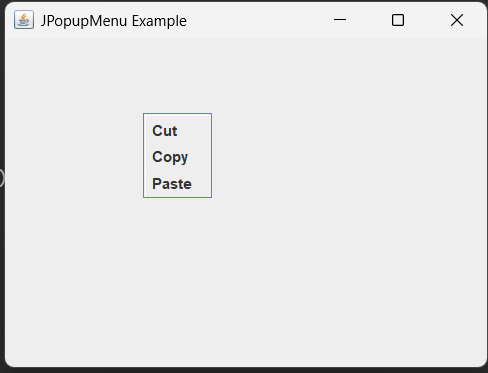
17. WAP in Java to demonstrate swing's JTree
import javax.swing.*;
import javax.swing.tree.*;
import java.awt.*;
public class JTreeExample extends JFrame {
public JTreeExample() {
// Set up the frame
setTitle("JTree Example");
setSize(400, 300);
setDefaultCloseOperation(JFrame.EXIT_ON_CLOSE);
setLayout(new BorderLayout());
// Create root node
DefaultMutableTreeNode root = new DefaultMutableTreeNode("Root");
// Create child nodes
DefaultMutableTreeNode child1 = new DefaultMutableTreeNode("Child 1");
DefaultMutableTreeNode child2 = new DefaultMutableTreeNode("Child 2");
DefaultMutableTreeNode subChild1 = new DefaultMutableTreeNode("Sub Child 1");
DefaultMutableTreeNode subChild2 = new DefaultMutableTreeNode("Sub Child 2");
// Build the tree structure
root.add(child1);
root.add(child2);
child1.add(subChild1);
child2.add(subChild2);
// Create JTree
JTree tree = new JTree(root);
// Add tree to a scroll pane
JScrollPane scrollPane = new JScrollPane(tree);
add(scrollPane, BorderLayout.CENTER);
}
public static void main(String[] args) {
SwingUtilities.invokeLater(() -> {
new JTreeExample().setVisible(true);
});
}
}
Expected Output:
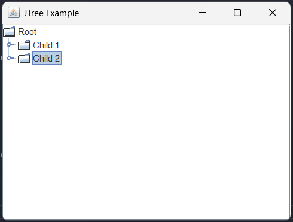